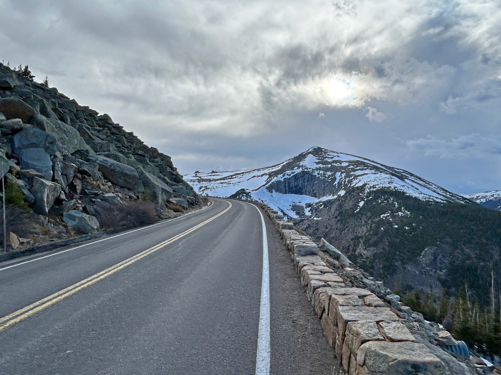

About Rocky Mountain National Park
This park is located in northern Colorado and is over 415 square miles. The park was established in 1915 and is kown for its very tall mountain peaks, lakes and the beautiful wildlife that roam the park. One of the most popular attractions at the park is driving on Trail Ridge Road and allowing the visitors to the landscape for miles.

Things to Do
Hiking
Hiking is one of the best activities that Rocky Mountain National Park has to offer and there are plenty of different trails ranging from easy to hard, it just depends on the hiker.
Looking at Wildlife
This park is home to many antlered animals including bighorn sheep, elk, and moose. During the fall is the most popular time to go and watch the wildlife as thats when the elk begin to gather for mating.
Camping
Camping in Rocky Mountain National Park is a big thing since that gives people a chance to explore more in the park and see something like the start ate night
Scenic Driving
Trail Ridge Road
Rail Ridge Road is one of the most popular tourist attractions in the whole park. The road goes on for 48 miles with the elevation getting to over 12,000 feet. This is a great activities to do when you want to take a break and still enjoy all of the views that the park has to offer. However this road is closed for most of the winter months due to snow.